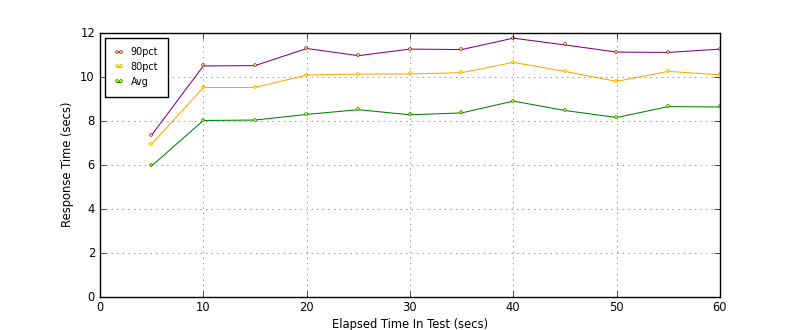
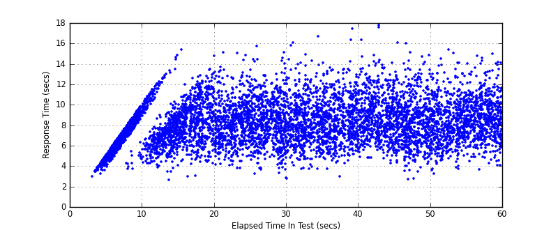
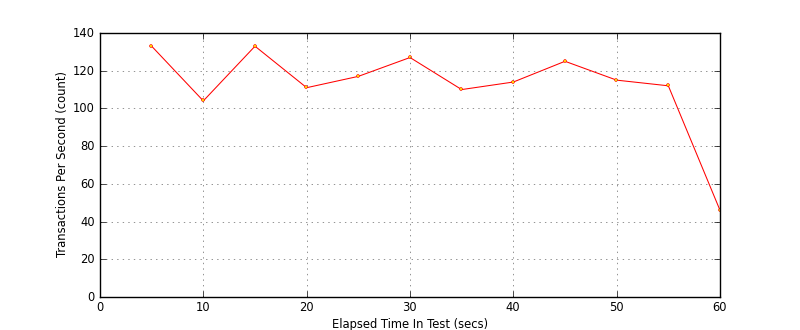

Performance Results Report
Summary
transactions: 7760
errors: 0
run time: 60 secs
rampup: 0 secs
test start: 2017-05-24 18:25:28
test finish: 2017-05-24 18:26:25
time-series interval: 5 secs
workload configuration:
| group name | threads | script name |
|---|
| user_group-21 | 40 | redis_stress.py |
| user_group-20 | 40 | redis_stress.py |
| user_group-23 | 40 | redis_stress.py |
| user_group-22 | 40 | redis_stress.py |
| user_group-25 | 40 | redis_stress.py |
| user_group-24 | 40 | redis_stress.py |
| user_group-2 | 40 | redis_stress.py |
| user_group-3 | 40 | redis_stress.py |
| user_group-1 | 40 | redis_stress.py |
| user_group-6 | 40 | redis_stress.py |
| user_group-7 | 40 | redis_stress.py |
| user_group-4 | 40 | redis_stress.py |
| user_group-5 | 40 | redis_stress.py |
| user_group-8 | 40 | redis_stress.py |
| user_group-9 | 40 | redis_stress.py |
| user_group-10 | 40 | redis_stress.py |
| user_group-11 | 40 | redis_stress.py |
| user_group-12 | 40 | redis_stress.py |
| user_group-13 | 40 | redis_stress.py |
| user_group-14 | 40 | redis_stress.py |
| user_group-15 | 40 | redis_stress.py |
| user_group-16 | 40 | redis_stress.py |
| user_group-17 | 40 | redis_stress.py |
| user_group-18 | 40 | redis_stress.py |
| user_group-19 | 40 | redis_stress.py |
All Transactions
Transaction Response Summary (secs)
| count | min | avg | 80pct | 90pct | 95pct | max | stdev |
|---|
| 7760 | 2.610 | 8.141 | 9.910 | 11.014 | 11.940 | 17.737 | 2.143 |
Interval Details (secs)
| interval | count | rate | min | avg | 80pct | 90pct | 95pct | max | stdev |
|---|
| 1 | 668 | 133.60 | 2.954 | 5.958 | 6.950 | 7.360 | 7.576 | 8.107 | 1.059 |
| 2 | 521 | 104.20 | 3.718 | 8.024 | 9.520 | 10.503 | 11.248 | 12.632 | 1.883 |
| 3 | 669 | 133.80 | 2.610 | 8.043 | 9.525 | 10.517 | 11.326 | 15.401 | 1.873 |
| 4 | 555 | 111.00 | 4.081 | 8.298 | 10.088 | 11.297 | 12.241 | 15.122 | 2.123 |
| 5 | 588 | 117.60 | 3.247 | 8.514 | 10.133 | 10.969 | 11.940 | 15.741 | 2.025 |
| 6 | 637 | 127.40 | 2.766 | 8.283 | 10.139 | 11.268 | 12.047 | 16.071 | 2.245 |
| 7 | 552 | 110.40 | 2.971 | 8.367 | 10.197 | 11.247 | 12.009 | 16.641 | 2.125 |
| 8 | 571 | 114.20 | 4.283 | 8.905 | 10.664 | 11.766 | 12.626 | 17.737 | 2.171 |
| 9 | 626 | 125.20 | 2.687 | 8.478 | 10.253 | 11.458 | 12.381 | 16.052 | 2.196 |
| 10 | 577 | 115.40 | 3.249 | 8.159 | 9.802 | 11.132 | 12.359 | 15.361 | 2.169 |
| 11 | 562 | 112.40 | 3.625 | 8.654 | 10.255 | 11.118 | 12.102 | 15.062 | 1.986 |
| 12 | 234 | 46.80 | 4.032 | 8.639 | 10.101 | 11.269 | 11.942 | 14.998 | 2.016 |
Graphs
Response Time: 5 sec time-series

Response Time: raw data (all points)

Throughput: 5 sec time-series
